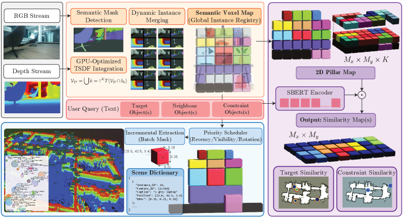
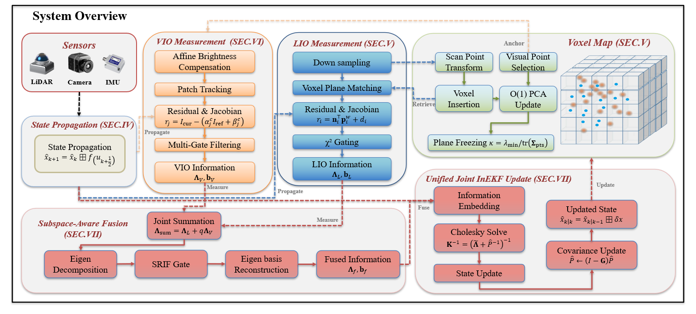
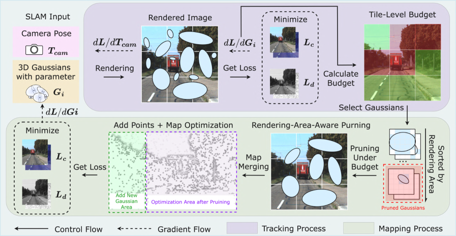
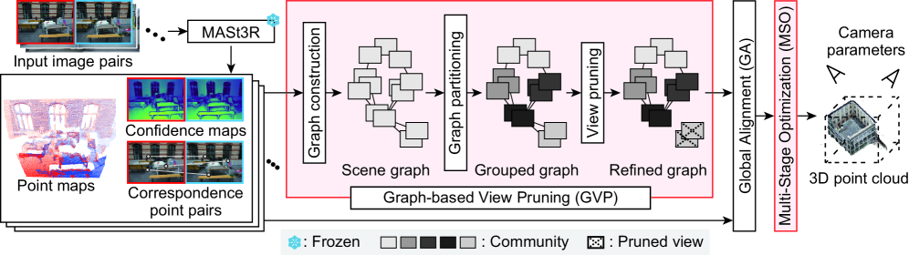
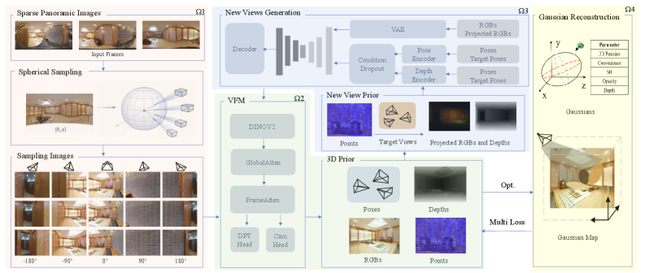

SLAM 与 3D 视觉进展：RoboAtlas、SA-LIVO、Pocket-SLAM
Executive Summary
本期真正值得沉淀的主线是“几何状态估计继续向语义、资源约束和公共先验融合”。 RoboAtlas 把 active SLAM 的目标从覆盖地图推进到语义任务完成，SA-LIVO 在退化方向上做信息选择，Pocket-SLAM 直接处理 3DGS-SLAM 的内存增长瓶颈。
工程上最接近可复用的是 Pocket-SLAM 的 pruning 实现和 SA-LIVO 的退化处理思想。 Pocket-SLAM 已公开代码，核心函数能对应论文机制；SA-LIVO 暂未找到公开仓库，但系统图、实验范围和嵌入式耗时结果完整，适合作为 LIVO 前端/滤波器设计参考。
Feed-forward / diffusion 3D 重建开始补 SfM/SLAM 的弱项，但证据要分场景看。 PanoImager 面向稀疏全景和弱视差，G-MASt3R-SfM 面向 MASt3R 错误匹配过滤；二者不等价于在线 SLAM 替代品，更像初始化、离线补图或失败恢复组件。
证据边界：深读论文 5 篇，repo 深读 3 个。另有 12 个摘要/API/元数据级条目只作为趋势跟踪，不作为深度结论来源。未编译、未运行任何仓库。
Deep-read Papers
| 优先级 | 论文 | 系统/框架图 | 核心判断 | 阅读证据 |
|---|---|---|---|---|
| 1 | RoboAtlas: Contextual Active SLAM cs.RO/cs.CV, 2026-06-24 |
 |
不是简单把 VLM 加到导航，而是用 OpenRoboVox 维护全局 3D 语义实例地图，再用 contextual bandit 在 frontier exploration、global map reasoning、egocentric VLM reasoning 间切换。亮点是证明 3D 语义地图本身比单纯换更大 VLM 更关键。 | arXiv HTML 全文：Intro、OpenRoboVox/RoboAtlas 方法、GOAT-Bench 与实机实验、消融和 limitation 段落。 |
| 2 | SA-LIVO: Efficient LiDAR-Inertial-Visual Odometry with Subspace-Aware Degeneracy Handling cs.RO, 2026-06-24 |
 |
把 LiDAR 与视觉退化处理从“模态级开关”推进到“信息矩阵特征方向级选择”。SAIF 对联合信息矩阵做 eigendecomposition 和 soft gate，视觉只补 LiDAR 退化方向，避免在已充分约束方向重复计算。 | arXiv HTML 全文：系统图、SAIF 数学定义、InEKF 更新、29 序列实验、runtime/memory 表、退化场景分析。 |
| 3 | Pocket-SLAM: Rendering-Area-Aware Pruning for Memory-Efficient 3DGS-SLAM cs.CV, 2026-06-23 |
 |
问题非常工程化：3DGS-SLAM 高斯数量随时间增长，KITTI 长序列会把显存和帧率拖垮。方法不是按 opacity/gradient 单点剪枝，而是用渲染面积贡献和 tile-level budget 保留局部关键高斯。 | arXiv HTML 全文 + GitHub 代码：论文实验表；代码中 utils/slam_external.py 的 compute_tile_budgets()、pocket_slam_prune() 与配置块。 |
| 4 | G-MASt3R-SfM: Graph-based View Pruning and Multi-stage Optimization for Robust SfM cs.CV, 2026-06-22 |
 |
围绕 MASt3R 类 dense matching 的关键短板：非重叠图像对会生成高置信错误对应。GVP 用匹配置信度建 scene graph 并做 community/pruning，MSO 再从局部一致性扩展到全局优化。 | arXiv HTML 全文：method pipeline、GVP/MSO 定义、ETH3D pose 和 MVS 表格、消融表。 |
| 5 | PanoImager: Geometry-Guided Novel View Synthesis and Reconstruction from Sparse Panoramic Views cs.CV, IROS 2026, 2026-06-25 |
 |
SfM-free 稀疏全景重建：先把全景拆成透视视图，用 VGGT 类先验估 pose/depth，再用 diffusion 生成补充视图，最后做 depth-guided 3DGS 优化。适合弱视差/少图像下离线补图。 | arXiv HTML 全文：pipeline、view completion、3D prior、Gaussian optimization、OmniScene/360Roam/Replica 等实验表。 |
{kind=link}
{kind=link}
{kind=link}
{kind=link}
{kind=link}
RoboAtlas
问题：传统 active SLAM 以几何覆盖为主，无法稳定回答“找到/接近/避开语义对象”这类开放词汇任务。
方法/结构：OpenRoboVox 做 voxel-pillar 语义实例地图，global map reasoning 输出目标/约束相似度图，egocentric VLM 在局部视角补推理，CMAB 按上下文切换动作。
数学/机制：语义相似度、可见性、递近性、旋转需求作为 bandit 上下文；不是端到端学习导航策略，而是在 SLAM map 上做决策调度。
实验：GOAT-Bench Val Unseen 上 SR 90.6%，SPL 53.4%；Qwen2.5-VL-7B 版本 SR 88.8%。实机 Unitree Go2 在约 1800 m² 环境、约 30k semantic instances 上完成 6 个自然语言指令，报告 100% task success。
启发：机器人系统里，地图的语义组织和查询接口可能比单次 VLM prompt 更影响任务稳定性。
SA-LIVO
问题：LiDAR 在走廊、平面等场景退化，视觉在弱纹理/光照变化下退化；简单模态 gating 无法处理“哪个状态方向需要视觉补偿”。
方法/结构：LiDAR 残差、视觉 patch tracking 残差共享线性化点，联合进入 InEKF；SAIF 在信息矩阵特征方向上保留可观方向、衰减退化方向。
数学/机制：核心是信息矩阵 eigendecomposition、方向选择 soft gate、Cholesky 解算与 InEKF covariance update。
实验：29 个序列，覆盖 HILTI'22、New College、Oxford Spires；论文报告 laptop CPU 平均 12.3 ms/frame，ARM board 26.8 ms/frame，峰值内存低 3.6-6.3x。
启发：LIVO/VIO 的退化处理可以从场景级质量判断转向状态子空间级信息分配，适合嵌入式实时系统。
Pocket-SLAM
问题：3DGS-SLAM 的高斯数量随 map 增长，长序列显存/FPS 不可控。
方法/结构：tracking 阶段累积 per-Gaussian gradient，按 tile 计算保留预算；mapping 后用 opacity × radius² 得到 rendering-area contribution，按 tile 保留 top-B 高斯。
数学/机制：贡献分数近似为 C_i = opacity_i * pi * radius_i^2，tile budget 由梯度总量分配；新加入高斯免于当轮剪枝。
实验：EuRoC 平均内存从约 25.4 GB 降到约 10.1 GB，FPS 从 1.3 到 3.6；KITTI 平均内存从约 34.7 GB 到 11.9 GB，FPS 从 0.8 到 2.4，定位/重建指标基本保持。
启发：大规模 3DGS-SLAM 要把 map representation 当成在线资源管理问题，而不是只追求 photometric loss。
G-MASt3R-SfM
问题：MASt3R 的 dense correspondence 在困难场景很强，但非重叠图像对错误匹配会污染 SfM 优化。
方法/结构：GVP 先用 confidence graph 分区和剪枝，再用 MSO 多阶段优化 camera parameters；MASt3R 本身冻结。
实验：ETH3D pose 表中平均 RRE 0.474、RTE 0.978、AUC 93.9、SfM rate 97%；MVS 表中 F1 0.762，高于 COLMAP 0.729 和 MASt3R-SfM 0.741。
启发：feed-forward matcher 接入 SfM 时，关键不是只换 matcher，而是要显式管控 view graph 的错误边。
PanoImager
问题：稀疏全景输入经常旋转主导、弱视差，SfM/SLAM 初始化不稳定。
方法/结构：全景采样成多透视视图，VFM/VGGT 类模块给出初始几何，diffusion 生成辅助视角，3D prior 约束 Gaussian reconstruction。
实验：OmniScene visible regions 上 PSNR 30.86、SSIM 0.893、LPIPS 0.148；360Roam 上 PSNR 25.27、SSIM 0.813、LPIPS 0.213；near-collinear setting 中 ATE 0.362。
启发：全景机器人/室内扫描中，生成式补视角可以作为 SLAM 初始化失败后的离线重建支路，但不能替代在线闭环和实时定位。
Repo Deep Dives
| 仓库 | 元数据 | 实际阅读文件/目录 | 代码级判断 | 成熟度 |
|---|---|---|---|---|
| UMN-ZhaoLab/Pocket-SLAM | 4 stars / 0 forks，BSD-3-Clause，updated 2026-06-25 | README.md, scripts/loop_closure.py, scripts/splatam.py, utils/slam_external.py, configs/kitti/lsgslam.py, configs/euroc/lsgslam.py, diff-gaussian-rasterization-w-depth.git/ |
README 明确列出相对 LSG-SLAM 的改动；compute_tile_budgets() 和 pocket_slam_prune() 实现了 tile budget 与 rendering-area-aware pruning；配置里有 N_tar、B_min、B_max、tile_size。 |
论文代码级。可读性强，但未 clone/编译/运行；依赖 CUDA 11.6、PyTorch 1.12.1、定制 Gaussian rasterizer。 |
| 0nandon/EmbodiedSplat | 97 stars / 2 forks，updated 2026-06-25，CVPR 2026 official code | README.md, download_data.py, src/main.py, src/model/model_wrapper.py, src/model/encoder/, config/experiment/scannet/, scripts/scannet/*.sh, requirements.txt |
确实是 Hydra + PyTorch Lightning 训练/测试管线，含 ScanNet/ScanNet++ 配置、FastSAM/CLIP/MinkowskiEngine/3D U-Net 相关配置。README 把 fast 版本、3D CLIP 训练和在线/增量 inference 策略区分清楚。 | 较完整研究代码，但重依赖 GPU 和第三方扩展。官方实验说明使用单张 RTX 6000 Ada 48GB；未下载 HuggingFace 数据和权重，效果未本地验证。 |
| JorgeChocolate/Global-LVBA | 8 stars / 1 fork，MIT，updated 2026-06-27 | README.md, CMakeLists.txt, package.xml, launch/lvba.launch, config/config.yaml, src/main.cpp, src/lvba_system.cpp, src/dataset_io.cpp |
README 像通用下载页，可信度弱；但 ROS/catkin C++ 代码实际存在。pipeline 是 runFullPipeline() 调 runLidarBA() 与 runVisualBAWithLidarAssist()，后者包含 voxel map、feature matching、track fusion、camera pose optimization。 |
原型/工程草稿级。依赖 ROS、Ceres、PCL、OpenCV、Sophus、SiftGPU 静态库；launch 文件有疑似残留调试文本，需先审构建脚本再复现。 |
github.com/lunarlab-gatech/HERCULES，但 GitHub 当前返回 404；DSP-SLAM++ 论文给出的 AUBVRL/DSP-SLAMpp 搜索/API 也为 404；SA-LIVO 论文写明 code will be open-sourced，但本次未找到可信公开仓库。
Quantitative Experiment Highlights
| 对象 | 数据集/场景 | 关键数字 | 比较对象/解释 |
|---|---|---|---|
| RoboAtlas | GOAT-Bench Val Unseen | SR 90.6%，SPL 53.4%；Qwen2.5-VL-7B 版本 SR 88.8% | 论文称较最强 prior baseline SR +17.8 pp。重要点是小模型版本仍高于使用 GPT-4o 的 baseline，说明 3D semantic map 提供了独立增益。 |
| RoboAtlas | Unitree Go2 real-world，约 1800 m² | 约 30k semantic instances，6 个语义导航指令报告 100% success | 任务包括目标寻找、邻近/约束对象查询、动态实例更新；但样本数小，不能当成泛化结论。 |
| SA-LIVO | HILTI'22、New College、Oxford Spires，共 29 序列 | 平均 12.3 ms/frame laptop CPU，26.8 ms/frame embedded ARM；peak memory 低 3.6-6.3x | 与更重的 LIVO/VIO 迭代方案相比，视觉 Jacobian 复用和方向选择降低了计算与内存。 |
| Pocket-SLAM | EuRoC / KITTI | EuRoC 平均内存约 25.4 GB 到 10.1 GB，FPS 1.3 到 3.6；KITTI 平均内存约 34.7 GB 到 11.9 GB，FPS 0.8 到 2.4 | 定位/重建指标基本保持，说明 pruning 不是简单牺牲 map quality 换速度。 |
| G-MASt3R-SfM | ETH3D | Pose: RRE 0.474、RTE 0.978、AUC 93.9、SfM rate 97%；MVS F1 0.762 | MVS F1 高于 COLMAP 0.729 和 MASt3R-SfM 0.741；主要收益来自 view graph pruning 与 multi-stage optimization。 |
| PanoImager | OmniScene / 360Roam / Replica | OmniScene visible PSNR 30.86、SSIM 0.893、LPIPS 0.148；near-collinear ATE 0.362 | 证明稀疏全景下 diffusion 补视角加 3D prior 有帮助，但主要是离线重建场景。 |
Trends & Insights
- 语义地图正在从“附加标签”变成导航决策状态。 RoboAtlas 和语义 mapping 相关论文都把 open-vocabulary object properties、movability、constraints 放进 map query，而不是只在末端调用 VLM。
- 3DGS-SLAM 的下一阶段不是只比渲染质量，而是比资源曲线。 Pocket-SLAM 的价值在于把内存、FPS、定位和重建质量放在同一张表里，直接面对长序列部署瓶颈。
- 退化处理从“传感器是否可靠”走向“状态方向是否可观”。 SA-LIVO 的方向级信息融合给 LIO/VIO/LIVO 后端提供了更精细的开关。
- Feed-forward 3D 与 SfM/SLAM 的关系更像互补。 G-MASt3R-SfM 需要 graph pruning，PanoImager 需要 3D prior 和 depth-guided optimization；它们不是直接替代在线 SLAM，而是给失败初始化、少视角重建和后处理补图提供新模块。
- 世界模型方向很热，但本期很多条目证据还偏抽象。 NavWM、Fast LeWorldModel、world value model 等值得跟踪，但缺少与真实 SLAM/map/localization 系统的紧耦合证据时，不应纳入本期核心结论。
Evidence & Reading Coverage
| 条目 | 覆盖级别 | 实际阅读/检查内容 | 限制 |
|---|---|---|---|
| RoboAtlas | arXiv HTML 全文系统图视觉确认 | Intro、system overview、OpenRoboVox、CMAB policy、GOAT-Bench 表、real-world table、limitations。 | 未找到公开代码仓库；实机任务数小。 |
| SA-LIVO | arXiv HTML 全文系统图视觉确认 | 系统架构、SAIF 数学、InEKF 更新、benchmark 表、runtime/memory 表。 | 代码尚未公开，本地无法复现实验。 |
| Pocket-SLAM | arXiv HTML 全文GitHub 代码阅读系统图视觉确认 | 论文实验表、README、utils/slam_external.py、scripts/loop_closure.py、配置和 rasterizer 目录。 |
未 clone/编译/运行；stars 很少，仍是早期研究代码。 |
| G-MASt3R-SfM | arXiv HTML 全文系统图视觉确认 | GVP/MSO 方法、ETH3D pose/MVS 表、ablation 表。 | 未找到公开代码；只基于论文全文。 |
| PanoImager | arXiv HTML 全文系统图视觉确认 | pipeline、diffusion view generation、3D prior、Gaussian reconstruction、benchmark 表。 | 未找到公开代码；离线重建定位，非实时 SLAM。 |
| EmbodiedSplat | GitHub 代码阅读未运行 | README、安装、数据准备、训练/评测说明、src/main.py、model wrapper、encoder registry、ScanNet scripts。 |
HuggingFace 数据/权重未下载；需要重型 CUDA 扩展。 |
| Global-LVBA | GitHub 代码阅读README 可信度弱 | ROS package、CMake、launch、config、dataset IO、system pipeline。 | README 与代码成熟度不一致；未构建。 |
| 摘要/API/元数据级跟踪 | 未深读全文 | OrthoTrack、DSP-SLAM++、HERCULES、RayPE、PRISM、FLAT、FLUX3D、HoloAgent-0、Compact Object-Level Relocalization、NavWM、Vision-Language Semantic Mapping、Decentralized Object PGO 等。 | 这些条目只用于趋势观察，不作为深度结论来源。 |
值得跟进事项
- 优先复现 Pocket-SLAM pruning。 从 KITTI 00/05 或 EuRoC MH/V 序列开始，记录高斯数量、显存峰值、FPS、ATE/RPE，重点验证
N_tar和 tile size 对 map quality 的影响。 - 跟踪 SA-LIVO 代码释放。 如果代码公开，先看 SAIF 是否能独立移植到现有 LIO/VIO filter，再用退化走廊/平面数据做最小复现实验。
- 把 G-MASt3R-SfM 当作 MASt3R pipeline 的 view-graph filter 候选。 适合和 COLMAP/MASt3R-SfM 在低重叠、重复结构、室内序列上对比。
- 对 RoboAtlas 的核心问题做小规模工程验证。 不必先复刻整套系统，可以用已有 3D semantic map + text query 做“global semantic reasoning vs egocentric VLM”消融。
- 对 EmbodiedSplat 保持代码关注但谨慎复现。 依赖链重且 48GB GPU 实验设定偏高，更适合作为 semantic 3DGS 结构参考，而不是短期可跑基线。
原始链接列表
深读论文
- RoboAtlas: Contextual Active SLAM
- SA-LIVO: Efficient LiDAR-Inertial-Visual Odometry with Subspace-Aware Degeneracy Handling
- Pocket-SLAM: Rendering-Area-Aware Pruning for Memory-Efficient 3DGS-SLAM
- G-MASt3R-SfM: Graph-based View Pruning and Multi-stage Optimization for Robust SfM
- PanoImager: Geometry-Guided Novel View Synthesis and Reconstruction from Sparse Panoramic Views
补充论文/趋势跟踪
- OrthoTrack: Continuous 6-DoF UAV Trajectory Estimation Anchored in Public Orthophotos
- DSP-SLAM++: A Unified Framework for Multi-Class, High-Fidelity Object SLAM in the Wild
- HERCULES: An Open-Source Simulation Framework for Heterogeneous Multi-Robot SLAM
- RayPE: Ray-Space Positional Encoding for 3D-Aware Video Generation
- PRISM: Feed-Forward Single-Image 3D Reconstruction via Geometric Warp-Residual Modeling
- FLAT: Feedforward Latent Triangle Splatting for Geometrically Accurate Scene Generation
- FLUX3D: High-Fidelity 3D Gaussian Generation with Diffusion-Aligned Sparse Representation
- HoloAgent-0: A Unified Embodied Agent Framework with 3D Spatial Memory
- NavWM: A Unified Navigation World Model for Foresight-Driven Planning
- Compact Object-Level Representations with Open-Vocabulary Understanding for Indoor Visual Relocalization
- Vision-Language Model Reasoning for Contextual Semantic Mapping in Intralogistics
- Decentralized Pose Graph Riemannian Optimization for Object-based Multi-Robot SLAM
仓库与项目页
- UMN-ZhaoLab/Pocket-SLAM
- 0nandon/EmbodiedSplat
- JorgeChocolate/Global-LVBA
- HERCULES project page，项目页存在但 GitHub code link 当前 404。